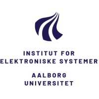

Student Worker, Ambolt AI
Student software developer working with applied AI in a professional setting.
About
I am Benjamin Falk, an 8th semester Computer Engineering master's student specializing in AI, Vision & Sound at Aalborg University.
I am interested in technology that works outside demos: robust model behavior, clear software structure, and interfaces that help people understand what a system is doing. I specialize in AI, Machine Learning and Computer Vision.
I currently work at Ambolt AI as a student software developer, and I have 3 different jobs at the Department of Electronic Systems at AAU.
 Visit Ambolt AI
Visit Ambolt AI

Visit Electronic SystemsStudent software developer working with applied AI in a professional setting.
Representing Computer Engineering and supporting outreach activities.
Representing Cybersecurity and helping with study-related questions and guidance.
Working in Administration & IT at the Institute of Electronic Systems.